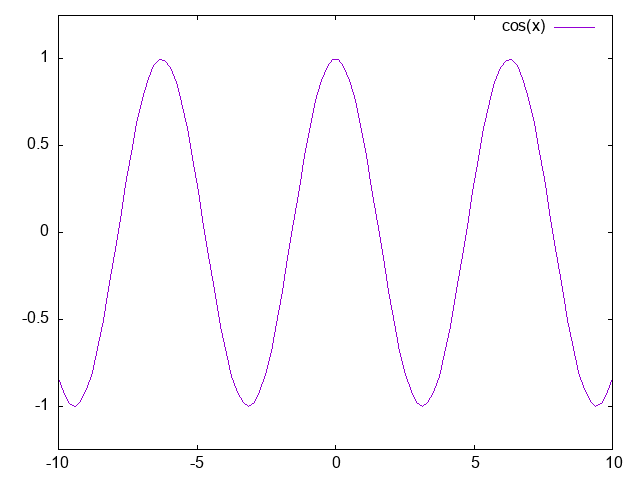

gnuplotの世界観
gnuplotの世界観です。
gnuplot
gnuplotでグラフを描こう
gnuplotは二次元から三次元まであらゆるグラフを描けるソフトウェア。
手描きでは絶対に描けないような高度で美しいグラフを描ける。
基本
基本的に、gnuplotシェルが起動したら、setコマンドとplotコマンドで数式や表示する範囲などを入力し、replotで再描画できる。
基本的に、グラフを描画するためには、
gnuplot> plot xに関する関数式
とする。
たとえば、
gnuplot> plot cos(x)
また、resetで表示を初期状態に戻し、splotで三次元のグラフを描画できる。
詳しいことはネット上にいくらでもあるので、そうしたページを参照して欲しい。
setとplot
gnuplotを使うコツはsetとplot。setでは、グラフの細かい設定、たとえばx軸やy軸の表示範囲の設定や、ラベルの設定、出力端末（X11の画面に表示するか、PNG形式の画像ファイルやPostScript (eps)で出力するかなど）の設定ができる。
たとえば、デフォルトの表示端末はx11に設定されている。なんらかの理由でこのデフォルトに戻したい場合は以下を実行する。
gnuplot> set terminal x11
macOSの場合、デフォルトはaquaに設定されている。
gnuplot> set terminal aqua
これをPNGに設定するには、以下のようにpngに変更した上で、出力ファイル名を設定する。
gnuplot> set terminal png gnuplot> set output "hoge.png"
epsに設定するためには、PostScriptに設定した上でepsオプションをつける。
gnuplot> set terminal postscript eps
setでは、グラフの表示範囲も設定できる。x軸はset xrange、y軸はset yrangeで設定する。
たとえば、x軸の範囲を-100から100にしたいなら以下のようにする。
gnuplot> set xrange [-100:100]
また、エクセルのように文字列を表示させたいならラベルを設定する。set labelで設定できるほか、set xlabelでx軸のラベル、set ylabelでy軸のラベルを設定できる。
この状態で、\(y = x^2\)のグラフを表示させたいなら以下のようにする。
gnuplot> plot x ** 2 with lines
**は累乗を表す。また、withは描画に使用する線などの形式の設定で、lines（実線で表示）のほかにpoints（点で表示）やboxes（棒グラフ）など多数ある。
設定の保存と読み込み・スクリプト
しかしながら、上記のようにコマンドで操作するのはあまり一般的ではない。gnuplotを立ち上げる度、あるいは別のグラフを描画する度に、もう一度最初からコマンドを打ち込まなければならないからである。
設定を保存するsaveコマンドや、設定をロードするloadコマンドを使って、設定内容を保存・読み込みすることもできる。
gnuplot> save "hoge.plt" gnuplot> load "hoge.plt"
しかしながら、gnuplotにはコマンド操作を使うのではなく、スクリプトを使ってコマンドの羅列を実行することができる。
スクリプトを使うことで、わざわざコマンドを実行するのではなく、スクリプトにあらかじめコマンドを書いておいて、必要になったら実行し、変更が必要なら特定の場所だけを簡単に編集できる。
たとえば、（set terminalの設定を除いた）上のグラフ描画をスクリプトにすると以下のようになる。
set xrange [-100:100] plot x ** 2 with lines
ユーザ変数とユーザ関数
gnuplotでは、ユーザ変数とユーザ関数が利用できる。これは自分で変数や関数を定義する機能で、以下のように利用する。
v = 100 f(x) = x ** 2 plot f(v)
データプロット
また、関数的な利用だけではなく、データファイルを読み込んでそのデータの値を座標に表示する「データプロット」と呼ばれる機能がある。
まず、データファイルhoge.datに、x軸とy軸の組をスペース区切りで記述する。
-10 6 -5 8 0 10 5 12 10 14
これを以下のように表示することができる。
gnuplot> plot "hoge.dat"
そのほか
そのほか、gnuplotには数多くの機能がある。三項演算子（式 ? 真の場合の値 : 偽の場合の値）を使えば簡単な条件分岐もできるし、ループも可能で、繰り返しグラフを再描画することでアニメーションのようにもできる。
また、C言語の関数をインポートして使う、などといったことも可能。
2次元のグラフだけではなく、3次元のグラフを書くこともできる。
gnuplotが使えない環境では、エクセルでグラフを書くこともあるかもしれない。Windows版のgnuplotはwgnuplotなどがある。エクセルはビジネス向け、gnuplotは科学向けの「硬派な」人向けであると言われることが多い。理工系の大学生なら、TeXとgnuplotは必ず使ったことがあるはずである。
参考文献
以下は参考文献。
実例
sin, cos, tanのグラフ
以下はgnuplotで描いたsin(x)のグラフ。

以下はgnuplotで描いたcos(x)のグラフ。

以下はgnuplotで描いたtan(x)のグラフ。

三角比も参照のこと。
2026.01.07
デモ一覧
gnuplotではコマンド操作でどんなグラフも描けるが、以下にデモがある。
簡単な説明
gnuplot
簡単なコマンド入力で関数のグラフが描ける。
人間が鉛筆で描くのでは絶対に描けないような綺麗なグラフが出力できる。